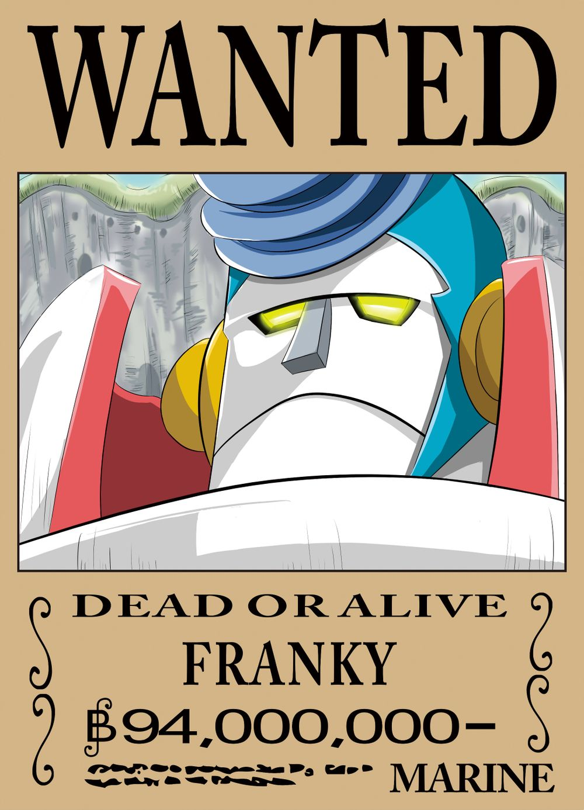

《人物简介》弗兰奇

简介
弗兰奇，（原名：卡特·弗兰姆）是日本漫画《海贼王》中的人物。草帽海贼团船匠，性格豪放，喜欢唱歌，跳奇怪的舞，下身喜欢只穿一条短裤。身为改造人的弗兰奇，身体藏着各种兵器。弗兰奇在被cp9抓入司法岛的过程中被路飞他们救罗宾的精神所感动，义无返顾的站在路飞他们一边。司法岛事件结束后，弗兰奇用宝树亚当的材料建造了一艘梦想之船，取名“桑尼号（即万里阳光号）”，并赠送给草帽海贼团。后来在路飞的邀请下进入了草帽海贼团。 弗兰奇本来是想制造出梦想之船，但“桑尼号”完成后，只想看到自己制造的船能到达世界尽头。
名字来源
原型是取自石森章太郎的作品“人造人009”和“假面骑士”。 “Franky”这名字可能参考自“科学怪人”的创造者“Frankenstein”（弗兰肯斯坦）。弗兰肯斯坦是第一部科幻小说，是个人造人，符合弗兰奇的身份（改造人和人造人接近）。 “Franky”日文发音的后半部份和打喷嚏时的发声一样。 “Franky”原名flam 拉丁文中火焰是flamma，英文是flame，火焰和那个ICEBURG冰山 （七水之都市长）相照应。
性格特征
个性相当热血重情义，容易因受到感动而大哭甚至拿出吉他来弹奏，被罗宾称为很有趣的男人，总是穿着一条泳裤而被当成变态。对路飞直称“草帽”，索隆“肚兜”，香吉士“卷卷眉”，乌索普“长鼻子”，娜美“大姐头”，乔巴“鹿猩猩”，对罗宾则直称“妮可·罗宾”。但在新世界篇中，弗兰奇已经改口直称伙伴的名字。 虽然性格轻浮但热血重情义，容易因受到感动而大哭，甚至拿出乌克丽丽来弹奏，被妮可·罗宾称为很有趣的男人。因为总是穿着一条泳裤而被当成变态，连修船的工具也藏在如同百宝袋的泳裤里。喜欢跳自创的“变态之舞”，可是他不但不在意而且还对此引以为傲，曾经把“编队”听成“变态”（日文发音相同）（第388集）。口头禅有“嗯……超级－！”（ん～スーパー!）、“这个星期的我很……”（今周のおれ～）、“啊呜”（アウ）。但普通时候也有身为年长者的常识，从客观的观点冷静说话. 最爱的东西就是可乐，弗兰奇的身体或者船的动力来源都以以可乐来代替。弗兰奇拥有高超的建造技术（例如改造娜美的威霸、鬼魂岛篇30秒搭建桥梁、以及香波地诸岛篇为迪巴鲁的坐骑加装推进设备），乌索普有时也会帮他制作一些应急设备。每当弗兰奇开发或创造新武器，甚至是对自己身体进行改造的时候，都会习惯在自己的作品上标上“BF”与数字，代表该项设施是他创造的第几项作品，而乌索普和乔巴就是他最死忠的粉丝，对于他的新发明总是投以崇拜眼光。经过机关岛巴尔地摩的研究改造之后，为了方便执行船只的维护改造工作，还特地在自己的大型机械手掌内，加装更小型的机械手臂。另外，他非常忌讳被敌人吐嘈他的攻击招式，即便是因为自己攻击落空或是慢半拍而被吐槽，也会当场恼羞成怒。 尾田亦曾提到草帽海贼团如果是个大家族，弗兰奇就是家中的父亲（小混混）。弗兰奇在罗宾印象中的花种代表为银莲花（秋牡丹）。